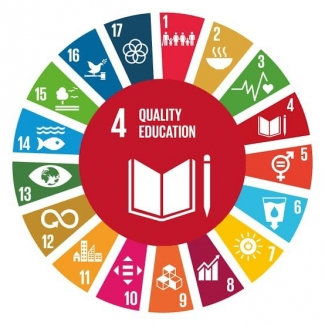

Salah satu tujuan dari SDGs adalah tujuan keempat yaitu ‘Pendidikan Berkualitas.’ untuk ‘menjamin kualitas pendidikan yang inklusif dan merata serta meningkatkan kesempatan belajar sepanjang hayat untuk semua.’ Setiap tujuan SDGs mempunyai targetnya masing-masing, dalam tujuan keempat ini, terdapat 10 target yang pada akhirnya harus coba untuk dapat dicapai:
Pada tahun 2030, menjamin semua anak untuk menyelesaikan pendidikan dasar dan menengah tanpa biaya, setara, dan berkualitas yang mengarah kepada capaian pembelajaran yang relevan dan efektif.
Pada tahun 2030, menjamin semua anak memiliki akses terhadap perkembangan dan pengasuhan anak usia dini, pengasuhan, pendidikan pra-sekolah dasar yang berkualitas agar mereka siap menempuh sekolah dasar.
Pada tahun 2030, menjamin semua anak mendapat akses yang sama terhadap pendidikan teknik, kejuruan, dan pendidikan tinggi, yaitu universitas yang terjangkau dan berkualitas.
Pada tahun 2030, meningkatkan jumlah pemuda dan orang dewasa yang memiliki keterampilan teknik dan kejuruan untuk pekerjaan yang layak dan kewirausahaan.
Pada tahun 2030, menghilangkan disparitas gender dalam pendidikan, menjamin akses yang sama untuk semua tingkat pendidikan dan pelatihan kejuruan, untuk masyarakat rentan penyandang cacat, masyarakat penduduk asli, da anak-anak dalam kondisi rentan.
Pada tahun 2030, menjamin semua remaja dan kelompok dewasa tertentu memiliki kemampuan literasi dan numerasi.
Pada tahun 2030, menjamin semua murid memperoleh pengetahun dan keterampilan yang diperlukan untuk meningkatkan pembangunan berkelanjutan melalui pendidikan untuk pembangunan berkelanjutan dan gaya hidup berkelanjutan, hak asasi manusia, kesetaraan gender, promosi budaya damai dan non kekerasan, kewarganegaraan global dan penghargaan keanekaragaman budaya dan kontribusi budaya untuk pembangunan berkelanjutan.
Membangun dan meningkatkan fasilitas pendidikan ramah anak, penyandang cacat serta gender, dan menyediakan lingkungan belajar yang aman, anti kekerasan, inklusif dan efektif bagi semua.
Pada tahun 2020, secara signifikan memperluas secara global, jumlah beasiswa berkembang khususnya untuk negara yang kurang berkembang, negara berkembang dengan pulau kecil, dan negara Afrika, untuk mendaftar di pendidikan tinggi, pelatihan kejuruan, teknologi dan komunikasi, program teknik, program rekayasa dan ilmiah, di negara maju dan lainnya.
Pada tahun 2030, meningkatkan pasokan guru berkualitas, melalui kerja sama internasional dalam pelatihan guru di negara berkembang, terutama di negara yang kurang berkembang, dan negara berkembang di pulau kecil.
